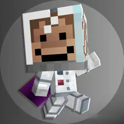

PORTUGAL · DEVELOPER & CREATOR
_Kevinzin_tuga_.
Olá! Sou o Kevin e gosto de transformar ideias em projetos. Exploro desenvolvimento, tecnologia, Minecraft e criação de ferramentas para comunidades.
“Building ideas, one block at a time.”

A criar coisas novasCREATIVE MINDSET // BUILDING MODE
01 / SELECTED WORK
Projetos.
Explora os projetos, experiências e construções.
MINECRAFT · FABRIC
AutoLoot Selector
Mod client-side para selecionar itens e automatizar a recolha a partir de contentores.
JavaFabricMinecraft
Ver projeto ↗
MINECRAFT · CREATIVE TOOL
MapArt Maker
Ferramenta criativa para transformar imagens em projetos de Map Art no Minecraft.
MinecraftTooling
EM BREVEDISCORD · JAVASCRIPT
Discord Bots
Bots com sistemas de tickets, moderação, economia e ferramentas para comunidades.
Node.jsDiscord.js
EM BREVEMINECRAFT · BUILDING
Minecraft Builds
Cidades, casas, castelos e espaços construídos para mundos e servidores.
BuildingWorldEdit
EM BREVENão existem projetos nesta categoria por enquanto.
✳ Projetos em constante evoluçãoEstatísticas CurseForge ↗
02 / TOOLKIT
Competências.
As tecnologias e ferramentas que fazem parte dos meus projetos.
Back-end & Tools
Minecraft
03 / CREATOR PROFILE
CurseForge.
O meu trabalho, mods e projetos Minecraft.
_Kevinzin_tuga_
CurseForge Creator · Minecraft Mods
—Seguidores
—Downloads totais
—Projetos publicados
Contadores automáticosA carregar dados…
04 / SAY HELLO
Vamos conversar.
Queres falar sobre um projeto, Minecraft ou simplesmente trocar ideias? Entra no meu servidor de Discord.
Entrar no Discord ↗DISCORD COMMUNITY · _KEVINZIN_TUGA_